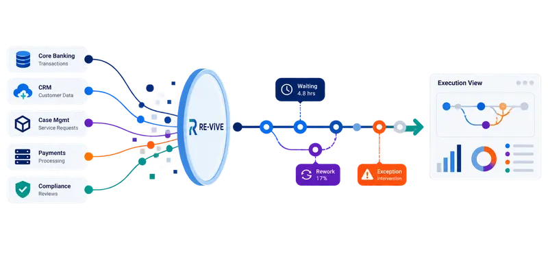

Banking operations
Customer onboarding, lending, payments, servicing and investigations.
Financial services
Financial services workflows rarely stay within one application or organizational team. See the execution patterns behind the outcome, across banking, capital markets and adjacent operations.

Applications
These represent areas where execution analysis can be applied when suitable records and identifiers are available.
Customer onboarding, lending, payments, servicing and investigations.
Trade lifecycle handoffs, post-trade exceptions, settlement and reconciliation.
Creation/redemption coordination, exception handling, custody-related handoffs and reconciliations.
Claims, policy servicing, underwriting and AI-assisted decisions.
Focused explorations
Explore the existing capital-markets material and a new ETF-specific workflow perspective. These pages describe platform applicability, not a claim of customer implementation in every area.